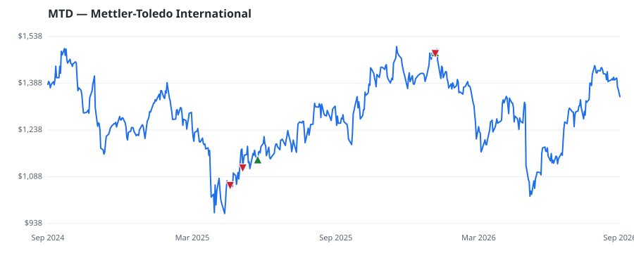

bullish · bearish · n/a — dots: price>SMA10 · SMA10>SMA50 · SMA50>SMA200 · up>down volume (20d)
Technology Hardware · large cap
Members who bought MTD earned a dollar-weighted +5.5% from their disclosure dates, versus +10.2% for the S&P 500 over the same holding windows (-4.7% alpha).

▲ green = a disclosed purchase · ▼ red = a disclosed sale (plotted on disclosure date)
Mettler-Toledo supplies weighing and precision instruments to customers in the life sciences (around 55% of sales), industrial (around 40%), and food retail (around 5%) industries. Its products include laboratory and retail scales, pipettes, pH meters, thermal analysis equipment, titrators, metal detectors, and X-ray analyzers. Mettler leads the market for weighing instrumentation and controls more than 50% of the market for lab balances. The business is geographically diversified, with the Americas accounting for about 37% of sales, Europe about 27%, China about 16% and the rest of the world LABORATORY ANALYTICAL INSTRUMENTS · website
| Revenue | $4.0B | Net income | $869.2M |
|---|---|---|---|
| Operating income | $1.0B | Diluted EPS | $42.05 |
| Assets | $3.7B | Equity | $-23.6M |
| Member | Chamber | Out-performer | Disclosed buys $ | Return on buys |
|---|---|---|---|---|
| Julia Letlow | house | — | $16K | +0.0% |
| Rob Bresnahan | house | — | $8K | +16.4% |
Disclosed $ figures are bracket midpoints — filings report ranges (e.g. $1,001–$15,000), not exact amounts.
🛒 Newly buying: Meridiem Capital Partners LP (+8%, 2.9% of book)
| Fund | Fund alpha vs SPY | Position | % of book |
|---|---|---|---|
| Meridiem Capital Partners LP | +8% | $64M | 2.9% |
| Amanah Holdings Trust | +68% | $15M | 0.9% |
Hedge data: SEC EDGAR 13F · ranked funds beat SPY in >50% of their quarters · fund alpha = mirror-portfolio return minus SPY.